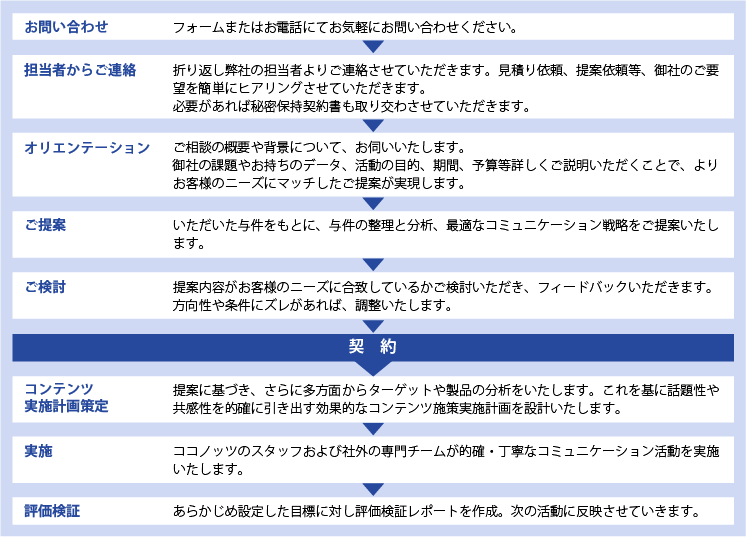

医療に関わる企業や医療提供者の抱えるニーズに対し、最適なコミュニケーション戦略でステークホルダーや生活者とのよりよい関係を構築し、課題解決を図ります。
多様なメディアやソーシャル上で医療情報が溢れるいま、生活者にとって有益な情報を選択することが難しい時代といわれています。医療関係者にとっては、生活者に最適な情報を伝え信頼を得ることが、 よりよい医療の提供や研究の発展に不可欠です。一方でメディアからは、医療機関や製薬会社から提供される医療情報の質が問われています。 医療・ヘルスケアにおけるPRでは、生活者・メディアからの信頼を獲得できる適切なコミュニケーション構築力、コンサルタント力が求められています。
 展示会
展示会●PRサービスのポイント →医療広報に求められる5つの条件
1.医療・ヘルスケア業界特有の情報発信を熟知しているココノッツならではのメッセージ設計
医療系事業会社在籍歴のあるメンバーが多く、医療を専門に活動してきたため、薬事法や医療広告ガイドラインなど法的レギュレーションを深く理解しています。
2.生活者目線でのコミュニケーション施策のご提案
その製品や治療法がどのフェーズにあるのかをふまえ、生活者の共感をよぶコミュニケーション設計を提案します。
●実施体制
ココノッツには医療関連の事業会社の経験を持つメンバーのほか、webメディア運営会社在籍経験者、薬事承認に関わる事務経験者、デザイナーなど 多彩なメンバーが在籍しています。この中より、各プロジェクトやクライアントにふさわしいメンバーでチームを作り担当させていただきます。
●経験疾患領域・製品
神経系疾患、整形外科疾患、眼疾患、生殖医療、希少疾患、ワクチン、血液製剤、人工関節 など
サービス提供の流れ
契約形態と費用について
※プラップから文言コピー2つの契約形態があります。お客様のニーズに応じて適切な形態をご提案させていただきます。
| リテイナー契約 | 原則として年間を通したパートナーシップのもと、お客様のコミュニケーション上の課題に総合的に取り組みます。 毎月定額のリテイナーフィーをお支払いいただきます。活動内容によっては別費用が発生する場合もございます。 |
|---|---|
| プロジェクト個別契約 | プレスセミナーなどのメディアイベント、危機管理対応、メディアトレーニングなど、単一プロジェクトのご相談にも応じます。 御見積等お気軽にご相談ください。 |
費用について：
担当スタッフがサービスやノウハウを提供する時間に準じた料金（フィー）設定をしています。
リテイナー契約の場合、サービス内容や依頼内容に基づいて、担当チーム（平均2～3名程度）を編成し、
担当スタッフの時間単価と想定滑動時間をもとに固定の月額フィーを設定します。
またプロジェクト契約の場合も原則として同様の考え方で設定いたします。